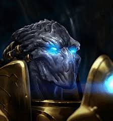
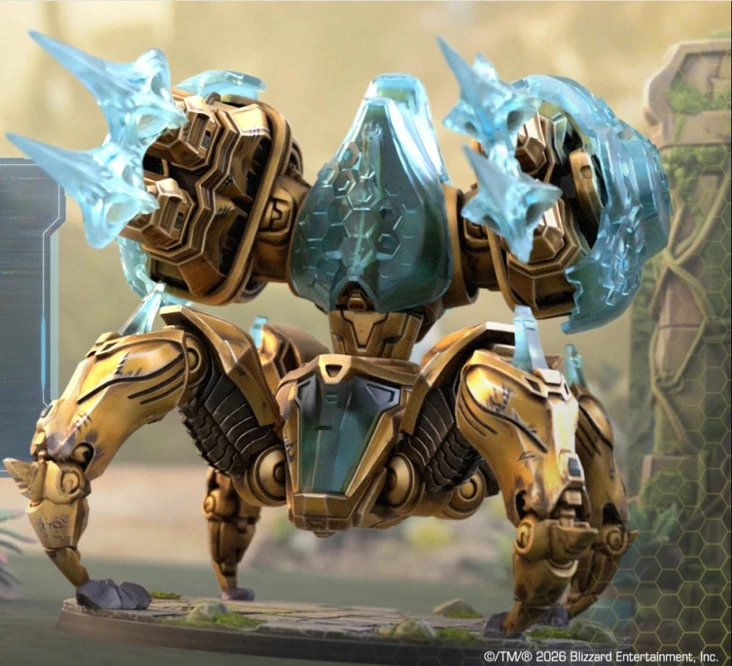
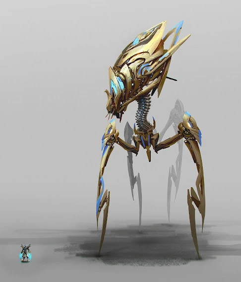

Протоссы — это высокоразвитая и технологически продвинутая раса гуманоидов во вселенной StarCraft, обладающая мощным врожденным псионическим потенциалом. Созданные древней расой зел-нага как воплощение «чистоты формы», они долгое время были объединены священной ментальной сетью Кхала, которая связывала их мысли и эмоции в единое целое. Обладая огромной продолжительностью жизни, протоссы используют разрушительное энергетическое оружие, силовые щиты и роботизированные технологии, ведя непрекращающуюся борьбу за сохранение своей великой цивилизации от угроз зергов и Падшего бога Амона.
Основные юниты

Зилот

Бессмертный

Колосс